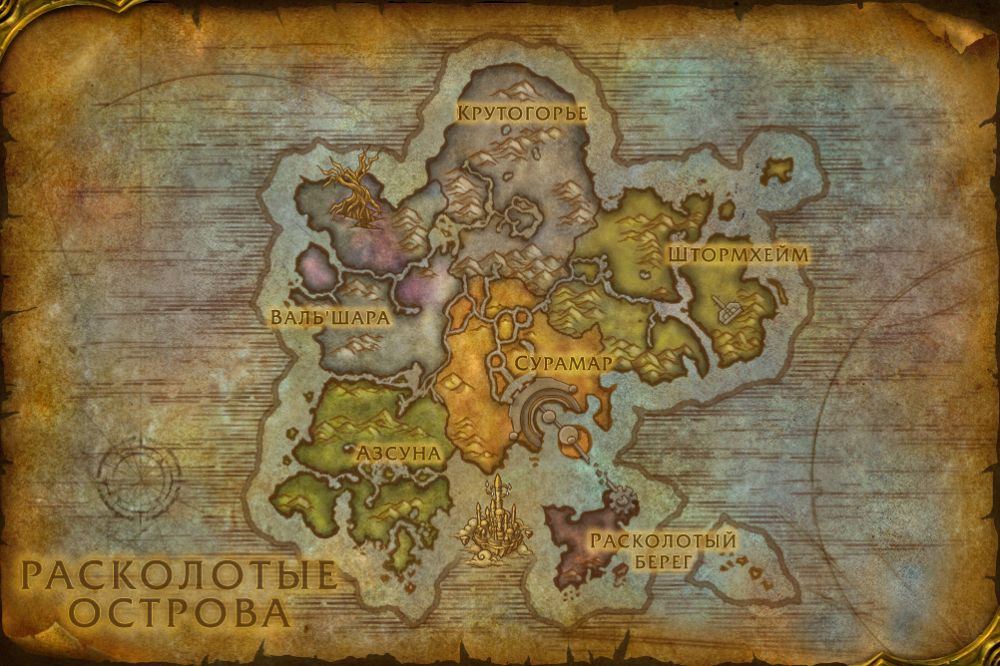

Сражения
- Драгон Зиморожденный – Драгон Зиморожденный с незапамятных времен наводил ужас на племена Крутогорья,
являясь из-за заснеженных гор. В нынешнем хаосе этот могучий эттин увидел для себя прекрасную возможность и
теперь показывается из своего высокогорного логова, чтобы заявить свои права на эти земли.
- Обломок – Обломок явился из океанских глубин, чтобы утолить свой голод. Первыми ему попались болотные мурлоки из Бухты кораблекрушения, и он поглотил многих. Несмотря на то, что великан истребил большую часть их племени, мурлоки начали поклоняться ему, как богу, скармливая ему своих друзей и родных,
пока Обломок не забылся сном. Когда он проснется, в его меню окажутся все обитатели этих земель.